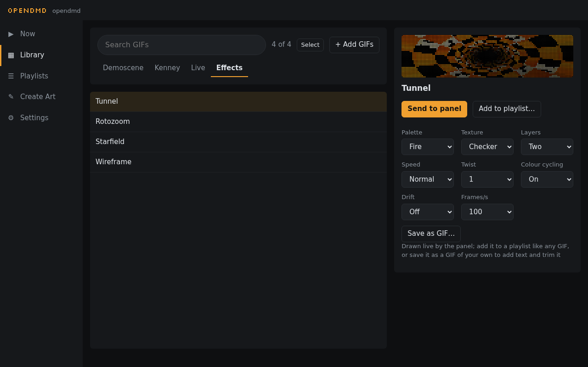

Effects and live items#

Besides your GIFs, the panel can draw a few things by itself. Find them in the Library under the Live and Effects tabs. Preview them, send them to the panel, or add them to any playlist, just like a GIF.
Live#
- Clock: the time, in one of four layouts, with the date and seconds if you want them. The player keeps its own time over the internet; set your time zone in Settings → Advanced → Time.
- Scrolling text: type a message ("Game over", "Insert coin") and choose its font, colour and speed.
Effects#
Classic demo-scene and 16-bit style animations, drawn live:
- Tunnel: a spinning time-warp tunnel.
- Rotozoom: Mode 7 style turning, zooming patterns, or a floor rushing to the horizon.
- Starfield: flying through stars, as warp streaks or dots.
- Wireframe: spinning 3D shapes, from a cube to a shape-shifting torus.
Each has a few options beside its preview, such as colour palette, texture and speed.
Colour and glow#
Two settings change the look of everything the panel shows, GIFs included. Find them in Settings → Playback:
- Colour: full colour, or a single colour like a classic pinball display: amber, red, green, blue or white.
- Phosphor glow: dots fade out gently instead of switching off, like an old plasma display. Short or Long, or Off.